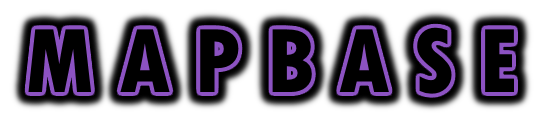

Mapbase is an open-source enhancement for the Source SDK that targets mappers and modders.
Its primary goal is to add quality-of-life features through changes to the Source 2013 codebase.
This site is still under construction and may not have all expected content.
Use Mapbase's original wiki or incomplete VDC documentation if needed.